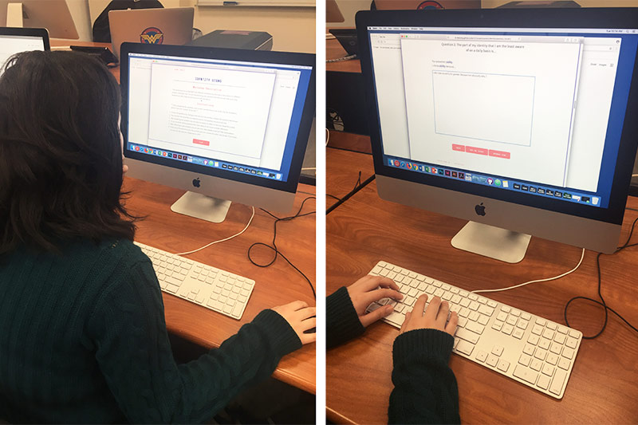
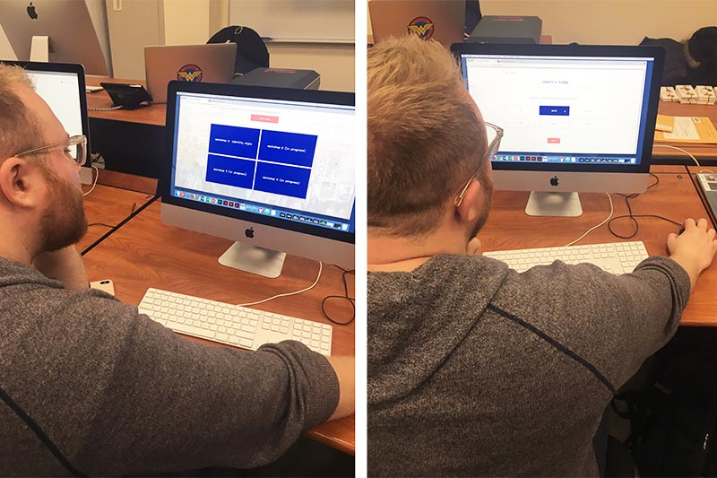

Audience Test Results
Michelle Hong: advanced knowledge on social justice
When Michelle was interacting with the website, she didn’t read my disclaimer about the glitch in the “Reflection” section (form field of the “Reflection” section in Workshop 1 doesn’t let you type again if you type something and delete your answer). Because of this, she got confused and stressed about the rest of the workshop, and didn’t make it to the end due to the time constraint. She suggested creating a message that popped up to warn user about the glitch if it cannot be fixed.
Michelle gave me feedback about the visuals of the workshop. She felt that the white screen with just questions made the user feel intimidated, and that the question/answer format felt like a quiz or test. She suggested that I add more color and make the workshop more inviting and fun. For the “Gallery” section, she didn’t notice the other narratives because the boxes were too small, and the scrolling of the narratives was not user-friendly. She suggested that I make the boxes bigger or add movement to catch the user’s attention.
Overall, she felt that the whole website was easy to navigate, and that the workshop itself was valuable for people to learn more about social justice. She was also curious about the future workshops and what they would be.
Adam Taylor: intermediate to advanced knowledge on social justice
When Adam interacted with the website, he more thoroughly read the instructions I provided for the user testing, so he did not encounter the glitch. He made it to the “Gallery” section before encountering any user experience issues; in the “Gallery” section, he scrolled through the other users’ responses but ended up scrolling the entire page instead.
His main feedback was about the one-scroll page. He felt that it was confusing for the user to be able to see that the whole page could scroll. He also suggested separating all the questions into different pages or snapping the questions to the top of the page. He also felt that the “ Ask me later” option in the “Reflection” section was unnecessary, and that users should have the same path through the workshop instead of having choice. Additionally, he felt the instructions were too lengthy and that they could be cut down. He also felt that the workshop felt like a quiz, and that images would help make it more friendly.
Action Plan
- Snap workshop page sections so accidental scrolling does not occur
- Add more imagery/colors to workshop
- Fix form field glitch for "Reflection" section
- Fix button glitch after Gallery 5
- Redesign "Gallery" section to be more visually engaging and user-friendly (make boxes bigger, clickable, and display overlay instead of scrolling)